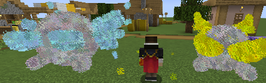

Minecraft Mod Project – Origins Expanded
Gaming has always been one of my biggest hobbies, and when a game truly intrigues me, I often go
the extra mile to create mods for it. The Origins system in Minecraft was one of those cases. I
began this project during the transition from high school to university, while attending two
English courses. I was so passionate about the idea that I found myself spontaneously diving
into code, building features just for the thrill of it.
This project includes three fully custom Origins, each with unique lore, abilities, and
mechanics that push the limits of what the Origin system can do. For more details, check out the
showcase below — it's a fun mix of storytelling and over-the-top design.
Minecraft is a block-based sandbox game with no set goals —
you can explore, build, survive, or just get creative. It’s a world where
you shape
the environment, face challenges, and craft whatever your imagination
allows.
It’s been one of my favorite games to play with friends since before
university, and
it still is today. I’ve always loved the freedom and creativity it offers,
making
every session a unique experience.
Origins is a Minecraft mod—a type of modification that changes or adds new
gameplay features to the base game. Mods can range from simple enhancements,
like improved lighting, to massive overhauls that add entirely new
dimensions, items, or mechanics.
Origins is one of my all-time favorite mods. It introduces a unique mechanic
where, upon starting a world, you choose an Origin—a special background that
defines who you are and what powers you possess. Each Origin comes with its
own set of abilities and drawbacks. For example, choosing the Feline Origin
lets you jump higher and take no fall damage, but you'll have reduced
physical strength compared to a human.
Creating a custom Origin goes far beyond copy-pasting files — it involves
crafting JSON-based logic that defines abilities, conditions,
and gameplay mechanics from the ground up.
Official documentation is available here: Origins
Documentation
While resources are limited and tutorials scarce, I took it as a challenge
to explore, experiment, and learn by diving into the community
and analyzing code from experienced creators.
This was a true hands-on learning experience, where I designed
powerful Origins with layered conditions and advanced interactions — the
kind of features rarely seen in standard mods.
It taught me not just the technical side, but also how to think modularly
and solve problems creatively.
The Origins mod is designed to be easily extended, especially through
Datapacks. In Minecraft, a datapack is a folder or ZIP file
that contains
custom data used to modify or add new features—like advancements, loot
tables, functions, recipes, structures, and more—without changing the game’s
actual code. They allow creators to personalize gameplay in a lightweight
and flexible way.
I build my custom Origins using datapacks, rather than developing a full
mod. Keeping a mod updated across multiple Minecraft versions can be
time-consuming, while datapacks offer a simpler, more sustainable way to add
new Origins, abilities, and mechanics—without the hassle of version-breaking
updates.
Before using the datapack, make sure you’ve installed two essential mods:
Origins and Pehkui. You only need to
download each mod from one site — choose either CurseForge or Modrinth,
whichever you prefer.
For downloading mod for minecraft, please refer to official
sources or trusted community guides, as I’m unable to provide detailed
support
⚠️ This mod is designed to work with the Fabric mod loader.
If you're using Forge, there are unofficial ports available
— just make sure the Pehkui version you download matches
your chosen mod loader.
Also, be mindful of the Minecraft version you're playing on. Download the
correct mod version to avoid compatibility issues.
Origins (Fabric) – Modrinth
🔧 Pehkui supports both Fabric and Forge. Be sure to choose the correct version for your mod loader:
Pehkui – CurseForgePehkui – Modrinth
1. Download the datapacks and extract them using any tool you prefer (e.g.,
WinRAR).
Each ZIP file must be extracted separately.
2. Start creating a new world as usual. Look for the “Datapacks” button during the setup process. (The button's location may vary slightly depending on your Minecraft version — refer to version-specific guides if needed.)
3. Drag the main datapack folders into the available datapack selection window.
4. Click “Yes” when prompted to confirm the import.
5. For each datapack, click the triangle (▶) button to move it into the “Selected” box (Appears on hover of the icon).
6. If you see a warning like “Made for an older version of Minecraft” or “Made for a newer version,” don’t worry. These datapacks are tested and confirmed to work up to Minecraft 1.20.1.
7. Once all datapacks are in the “Selected” list, press “Done” and proceed with world creation. You’re all set!
⚠️ Important: Please back up your world before continuing. While these datapacks have been tested and should work, issues may still occur. Always play it safe! Also, make sure to exit your world before making changes.
2. Go to the world you want to install the datapack in, then
click “Edit.”
Alternatively, you can manually locate your world folder using
File Explorer.
3. Click “Open World Folder.”
4. Open the folder named “datapacks.”
5. Copy the extracted datapack folders into this folder (make
sure they're not ZIP files).
After that, simply re-enter your world — everything should be
ready to go.
Minecraft Mod Project – Tools Used in My Showcase
To bring this showcase to life, I used several amazing community-made mods. I also want to give special credit to a good friend of mine for contributing a custom 3D model, which adds a personal touch to the presentation.
To effectively showcase my custom Origins, I used Replay Mod, which allows me to capture dynamic and cinematic camera angles. It’s an essential tool for creating professional-looking Minecraft footage.
Replay Mod - CurseForge site Replay Mod - Modrinth site
To make the showcase more vibrant and meaningful, I’m using the Yes
Steve
Model mod along with a custom model gifted to me by my close
friend, Lucioll
(An Triroll). He’s a passionate 3D artist who has supported me in
many game
modding projects.
The model featured is Huohuo (Maid version) — a special rendition of my
favorite character from Honkai: Star Rail, created exclusively for me by
Lucioll.

The world I’m using for this showcase is called Thera — a breathtaking, community-created map. I originally found it on a website, but unfortunately, I can no longer locate the original source to give proper credit. To ensure others can still experience it, I’ve uploaded the map myself (including some of my testing command blocks).
Thera Download Thera World (Google Drive)The shader I will be using for this showcase will be Photon
Photon Shaders - Modrinth siteAnd i will be using Iris Shaders mod (Fabric) to provide shader compatibility to make Photon shader works.
Iris Shaders - CurseForge site Iris Shaders - Modrinth site Iris Shaders - Official siteMinecraft Mod Project – Characters
Origins can simply define *who* you are—but I’ve taken it a step further. My custom Origins
aren't just traits or powers;
they're fully realized characters, each with a unique personality, backstory, and internal
struggle.
Meet the three main characters in my Origins datapack:
Aetherius: A child born from forbidden love between the Snow Queen and Zeus. Cast away to bury a divine mistake, you were left alone in the mortal world. Even divine blood couldn't shield you from pain, but Baran and Wintan were always there—your only warmth in a world that tried to forget you.
Arceus: Once the God of Light, you shaped the universe with a thousand hands. But that radiant power became your undoing, corroding your soul until you no longer recognized yourself. In desperation, you cast away your divinity and became The Unknown—drifting in the shadows, struggling to hold on to what remains of your mind.
Felorian: A magical cat turned Guardian, you chose sunlit windows and spellbooks over heroism. While others ventured out, you stayed beside your master—lazy, but loyal. Now, with the magician gone, you search for him once more, hiding your care beneath yawns and idle spells.
"The one who belongs nowhere"
Aetherius was one of my first dedicated Origins. Originally created as a simple concept for a friend, he gradually evolved into something much deeper—driven purely by my passion for storytelling and character design.
Background: Aetherius is the child of a forbidden union between the Snow Queen and Zeus. The first thing he saw upon opening his eyes was the vast blue sky—he had been abandoned in the human realm. Yet he wasn't alone. Two drone-like beings hovered nearby, speaking gently to him. They were and Wintan, guardians who have cared for him ever since his birth.
Personality: Aetherius is a kind and curious child, full of wonder about the world. He loves to eat—often excessively—and has inherited both the strength of his father and the cold rationality of his mother. He is always accompanied by and Wintan. Together, they act almost like his parents.
Power: Aetherius wields both lightning and ice—powers inherited from his divine parents. He can switch between the two elements, but each one requires the assistance of (for lightning) or Wintan (for ice) to stabilize the energy. However, using these powers comes at a cost: every time he casts a spell, his hunger increases rapidly.
Role: I designed Aetherius as a damage-dealer—essentially a mage specializing in mid- to close-range combat. Instead of using mana, his abilities are fueled by his hunger bar. He deals high damage, but his powers come with a high cost.
Side Characters: is hotheaded and direct, firmly believing that strength can overcome any obstacle. In contrast, Wintan is calm, analytical, and often overly protective of Aetherius. As his constant companions, both are always ready to support Aetherius whenever he needs them.
Below are the initial designs of and Wintan.
This was the original combined design when both (Lightning) and Wintan (Ice) were activated simultaneously.
However, this setup caused performance issues, so I switched to a new method. Now, an elemental circle appears beneath the player every 2–3 seconds: a lightning circle if is active, and an ice circle if Wintan is active. If both are activated, the circles alternate between the two elements.
Origins typically come with
Advantages and
Disadvantages — passive
traits that either aid or hinder your gameplay.
In addition, there are Active
Skills triggered using dedicated keybinds:
Primary and Secondary. My system goes
further by introducing a third keybind:
Save Hotbar Activator.
Active skills have cooldowns, shown through a custom cooldown bar displayed above
the hunger bar in-game.
Many skills change behavior when used while holding Shift (sneak),
offering alternate effects when combined with Active,
Secondary, or
Save Hotbar Activator inputs.
There are also Ultimate
Skills with longer cooldowns, and
Special Skills that
trigger through specific movement input combos.
These are passive skills that benefit you, which will be activated automatically all the time or by condition.
You deal an additional 3 hearts of damage to mobs.
Condition:
Standing in rain or during a thunderstorm.
A visual indicator (sand particles) will appear under your character while this effect is active.
Lore:
Rain often symbolizes sorrow, but
to you,
it's a source of comfort. Every time you step into
the rain,
it feels as though a familiar figure stands beside
you —
someone who always laughed, patted your shoulder,
and
encouraged you to give the world your all. But no
matter how
many times you turn to look, it's always
there, smiling with his signature cheerful grin.
You regenerate half a hunger icon (1 hunger point) every 3 seconds.
Condition:
Must be standing in a cold biome (temperature ≤ 0.1).
A visual indicator (deep blue snow particles) will appear around you while this effect is active.
Lore:
Cold often symbolizes loneliness,
but for you, it means love.
Whenever you step into the chill, it feels like a
familiar presence is beside you—smiling
softly, holding your hand, and whispering that
everything will be okay.
Yet no matter how many times you turn to see her,
it’s always Wintan
with her gentle, comforting smile.
You move faster when walking or sprinting.
Condition:
Must be standing on ice or snow.
A visual indicator (light snow particles) will appear under your character while this effect is active.
Lore:
You remember
once mentioning how Wintan
loved ice
skating. He’d spend hours watching her, even joking
that if I ever saw it, I wouldn’t be able to look
away either. But then it hit me—she doesn’t even
have legs. So how was she skating? I still don’t
have an answer.
These are passive skills that harms you, which will be activated automatically all the time or by condition.
Your hunger depletes 3% faster.
Condition:
Always active.
Only while your Support Mode (Transformation Mode) is not active.
Lore:
You're grateful for the power that
comes with
being a god, but you can’t stand
the constant hunger. Even after finishing a feast
fit for three,
your stomach growls like it’s
empty again. Being powerful has its price — and it’s
always
hunger.
You take 30% more damage and deal 50% less damage.
Condition:
While in the Nether or in areas with high temperatures (≥ 2.0).
A visual indicator (flame particles) will appear around you when this effect is active.
Lore:
You’ve never been able to stand
the heat — whether it's the scorching Nether or just
a blazing biome. It drains you, weakens you. Oddly
enough, seems to
feel the same
way, always avoiding these places without
explanation.
You take 30% more damage, deal 50% less damage, and your underwater breath is slightly reduced.
Condition:
When completely submerged in water.
A visual indicator (blue flame particles) will appear around you while this effect is active.
Lore:
Being underwater has always felt
wrong to you — suffocating, heavy,
unfamiliar. Maybe it’s something inherited, or maybe
it’s just instinct. One thing’s certain:
Wintan avoids water just
as much as you do.
Active skills are toggleable abilities with no cooldown, often involving a transformation that changes gameplay. They can be activated via keybinds, sometimes under specific conditions.
Instantly teleport to any block you're looking at — up to 45 blocks away.
Condition:
Cannot be used during Heaven Fall or Arctic Pulse stages.
Can be used during Arctic Pulse's Heat Up stage.
Activation: Press Sneak + Save Hotbar
Activator.
Cooldown: 5
seconds.
Lore:
You’ve always wondered how and Wintan can vanish and
reappear so effortlessly.
Do they manipulate space itself? Because now…
you do too.
Aetherius features a unique
system centered around toggling between two support modes:
and
Wintan
Mode.
Each mode grants distinct perks and abilities, offering different
playstyles.
You can activate them individually or together for increased power —
though doing so comes with greater
risk.
Support
Modes are toggleable transformation skills that
alter gameplay and unlock
special active and
passive
abilities.
specializes in offense and
aggression.
While active, you can select Baran’s skills using hotbar
keys 1–5, with 5 being his
ultimate.
Each ability is designed for power,
control, and burst damage — a
perfect match for his bold, fearless nature.
Activate using the Primary
Active Key
(customizable in keybinds).
Upon activation, the message "I'm here,
Buddy"
will appear on your screen,
and you’ll be surrounded by yellow electric
sparks ⚡ — a clear sign that
is with you.
You deal 20% more damage but also take 20% more damage.
Condition:
must
be active.
Lore:
:
"There, kid! You have my full support
now! Go out there and
beat 'em all with the ultimate strength
I gave you!"
Wintan: "Hey
now! Don’t listen to him! That maniac
always trades all
his defense for offense. Becoming a
glass cannon will wreck your
body!"
: "Come
on, Wintan. What doesn’t kill you
makes you
stronger, you know!"
Wintan: "So
losing a leg is supposed to make the
child
stronger?"
: "Hey!
Don’t twist my words!"
You are immune to Fire and Lightning damage.
Condition:
must
be active.
Lore:
: "With my
support, fire and lightning aren’t scary
anymore! Just
walk through it all like a god!"
Wintan: "Why...
just why? That’s such a reckless
suggestion."
: "Reckless?
No! It's impressive! Nothing screams godlike
more than
walking into flames unfazed."
(And you begin to
wonder... is Baran even in his right
mind?)
All active skills in consume hunger as a resource. The stronger the skill, the more hunger it drains.
Skill Cost Scaling:
Hotbar slots 1–5 trigger
Baran’s abilities. The higher the
number, the more hunger is consumed.
Slot 5 (ultimate) uses the
most.
Environment-Based Cost:
The amount of
hunger used also depends on your
surroundings:
- Lowest cost: While standing in rain or thunder
- Medium cost: Outdoors, under open sky
- Highest cost: Covered (under a block)
Passive Effect: While is active, your hunger depletes 30% faster.
Lore:
(You once asked if these
abilities use mana
points...)
: "Mana
points? Oh, you mean that blue bar in video
games? Nah, kid.
This is real. You use your body
— your stamina, your energy. The more you
fight, the
more you burn through it. So eat up and stay
ready."
Wintan: "It’s
not the most refined system... but it’s
effective. Just
don’t collapse mid-fight."